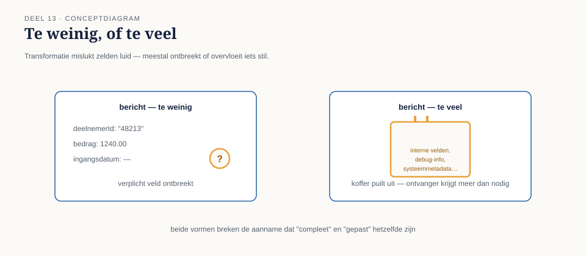
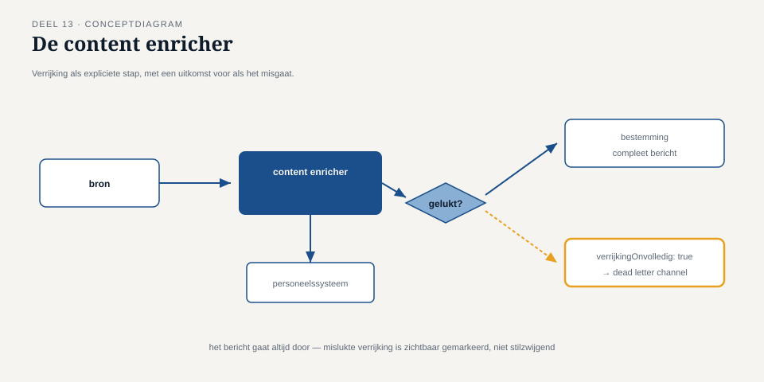

Deel 13 — Transformatie diepgaand: content enricher, content filter, claim check
Reader · Ductus-cursus Enterprise Integration Patterns · niveau 2 (professional) · deel 13 van 22
13.0 Een bericht dat te weinig wist, en een bericht dat te veel droeg
Twee afzonderlijke problemen kwamen bij Caspar in dezelfde week binnen, allebei in de nieuw ingerichte recipient list uit deel 12.
Het eerste: de externe accountant, die salariscorrecties boven €10.000 ontvangt, had behoefte aan meer context dan het mutatiebericht zelf bevatte — niet alleen het gecorrigeerde bedrag, maar ook de functiegroep van de deelnemer en de reden van de correctie zoals vastgelegd in een apart, ouder personeelssysteem dat nooit onderdeel was geweest van de mutatieketen. Het bericht zoals het door KERN werd verstuurd, wist dat gewoon niet.
Het tweede: de audit-trail, die elke mutatie-gebeurtenis ontvangt (deel 2, publish-subscribe), begon bij de introductie van de batchcorrecties uit deel 12 forse prestatieproblemen te vertonen. Onderzoek wees uit dat elk van de tweehonderd berichten uit een enkele batch een volledig kopie van het oorspronkelijke, uitgebreide brondossier meedroeg — een payload die honderden kilobytes besloeg per bericht, puur omdat de splitter uit deel 12 het volledige bronbestand aan elk afgesplitst deel had meegegeven "voor de zekerheid".
Beide problemen zijn tegengesteld van aard — te weinig informatie versus te veel — en dit deel behandelt voor elk een patroon: de content enricher voor het eerste, de claim check voor het tweede. Een derde patroon, de content filter, ligt conceptueel ertussenin en wordt als eerste behandeld omdat hij het eenvoudigst aansluit op wat deel 4 en deel 5 al hebben gelegd.

13.1 De content filter
Een content filter verwijdert onnodige of ongewenste velden uit een bericht, zonder — in tegenstelling tot de message filter uit deel 4 — te beslissen of het bericht als geheel wel of niet doorgaat. Waar de message filter een ja/nee-poort is voor het hele bericht, opereert de content filter binnen een bericht en laat het bericht zelf altijd door, in een uitgedunde vorm.
Dit patroon wordt relevant zodra een bestemming minder informatie nodig heeft, of mag zien, dan de bron oorspronkelijk verstrekt. Bij Meridiaan speelde dit bij de doorlevering aan de externe accountant: het volledige mutatiebericht bevat gevoelige velden (BSN-gehashte identificatoren, volledige adresgegevens) die voor de accountantscontrole niet relevant zijn en, vanuit gegevensminimalisatie-overwegingen, ook niet zouden moeten worden meegestuurd.
Een content filter is, net als een translator (deel 5), een component die de inhoud verandert — maar in tegenstelling tot een translator verandert hij niet de representatie of structuur, alleen de aanwezigheid van velden. Het onderscheid met beide eerder behandelde patronen is de moeite waard om scherp te houden:
| Patroon | Wat verandert het |
|---|---|
| Message filter (deel 4) | Of het bericht als geheel doorgaat |
| Content filter (dit deel) | Welke velden binnen het bericht overblijven |
| Translator (deel 5) | De representatie/structuur van bestaande velden |
13.2 De content enricher
Een content enricher voegt gegevens toe aan een bericht die de zender zelf niet bezat, door een aanvullende bron te raadplegen. Dit is het patroon dat het accountantsprobleem uit 13.0 oplost: vóórdat het bericht naar de externe accountant gaat, raadpleegt de content enricher het oudere personeelssysteem, haalt functiegroep en correctiereden op, en voegt die toe aan het bericht.
De belangrijkste ontwerpvraag bij een content enricher is er een die deze cursus al eerder stelde, nu in een nieuwe gedaante: is de raadpleging van de aanvullende bron zelf synchroon of asynchroon, en wat betekent dat voor de rest van de keten?
Als de aanvullende bron (hier: het personeelssysteem) snel en betrouwbaar synchroon te bevragen is, kan de enricher een eenvoudige, korte synchrone aanroep doen binnen de verwerking van het bericht — vergelijkbaar met een API-aanroep binnen een verder asynchrone keten, wat op zichzelf legitiem is zolang de aanroep zelf de drie veronderstellingen van deel 1 (nu beschikbaar, voorspelbare tijd, gelijktijdig operationeel) daadwerkelijk waarmaakt voor déze specifieke bron.
Is dat niet het geval — bijvoorbeeld omdat het personeelssysteem zelf onbetrouwbaar of traag is — dan moet de enrichment-stap zelf als een asynchrone sub-integratie worden behandeld: een eigen command message naar het personeelssysteem, een eigen request-reply, eigen idempotentie- en foutafhandelingsoverwegingen. Bij Meridiaan bleek het personeelssysteem, een verouderde applicatie zonder moderne koppelvlakken, precies dit tweede geval te zijn — de enrichment werd daarom niet synchroon binnen de bestaande keten gedaan, maar als aparte stap met een eigen dead letter channel (deel 9) voor het geval de verrijking mislukte, met als afgesproken fallback: het bericht gaat alsnog door naar de accountant, met een expliciet veld verrijkingOnvolledig: true in plaats van de keten volledig te blokkeren op een niet-kritieke verrijkingsstap.
Kernzin 13 van de cursus: een enrichment-stap is zelf een integratie, met alle bijbehorende afwegingen van niveau 1 — behandel hem nooit als een gratis, terzijde uit te voeren opzoeking.

verrijkingOnvolledig: true, plus een melding naar het dead letter channel).13.3 De claim check
De claim check lost het tegenovergestelde probleem op: een payload die te groot of te kostbaar is om door de hele keten mee te dragen. Het patroon ontleent zijn naam aan de garderobe-analogie: je geeft je jas af, krijgt een claimbewijs (een klein, uniek nummer), en haalt de jas pas weer op wanneer je hem nodig hebt — in de tussentijd draag je alleen het bewijs met je mee, niet de jas zelf.
Toegepast op de batchcorrectie-casus uit 13.0: in plaats van dat elk van de tweehonderd afgesplitste berichten een volledige kopie van het brondossier meedraagt, wordt het brondossier één keer opgeslagen in een gedeelde, snel doorzoekbare opslag (bijvoorbeeld een tussentijdse databasetabel of objectopslag, technologiekeuze in de Toolbijlage), en krijgt elk van de tweehonderd berichten alleen een verwijzing — de "claim" — naar die opgeslagen locatie. Componenten die alleen met de kern van het bericht werken (de router, de recipient list-berekening) hoeven de volledige inhoud niet te zien; alleen de eindbestemming die de volledige inhoud daadwerkelijk nodig heeft, "verzilvert" de claim door de opgeslagen data op te halen.
Twee ontwerpoverwegingen maken een claim check houdbaar:
De opgeslagen data moet minstens zo lang beschikbaar blijven als de langst mogelijke levensduur van een bericht in de keten. Als een bericht, door retries of een tijdelijke storing (deel 9), pas na drie dagen definitief wordt verwerkt, moet de claim nog steeds geldig zijn na drie dagen. Een claim check met een te kort bewaarde opslag creëert een nieuw, subtiel foutscenario: een geldig bericht dat plotseling zijn claim niet meer kan verzilveren.
Niet elke component in de keten heeft de volledige data nodig — bepaal per component of hij de claim kan verzilveren of niet. Bij Meridiaan bleek de recipient list-berekening (welke bestemmingen, op basis van bedrag en uitkeringsstatus) volledig uitvoerbaar met alleen de kernvelden die al in het kleine bericht zaten, zonder de claim te hoeven verzilveren — een bewuste ontwerpkeuze die de winst van de claim check (kleine berichten door de meeste van de keten) daadwerkelijk realiseert. Zou de recipient list-berekening toch de volledige data nodig hebben gehad, dan zou hij de claim voortijdig moeten verzilveren, wat het voordeel van het patroon grotendeels tenietdoet.
Vuistregel: pas een claim check alleen toe als de meerderheid van de keten met de kernvelden kan werken — verzilver de claim zo laat mogelijk, idealiter alleen bij de uiteindelijke bestemming die de volledige data werkelijk nodig heeft.
13.4 Drie patronen, dezelfde onderliggende vraag
De drie patronen van dit deel beantwoorden, elk op hun eigen manier, dezelfde vraag die ook deel 5 al stelde: wat hoort er precies in dit bericht te staan, voor déze specifieke ontvanger, op dít punt in de keten?
| Patroon | Antwoord op de vraag |
|---|---|
| Content filter | Minder dan de bron verstrekte — verwijder wat niet relevant of niet toegestaan is |
| Content enricher | Meer dan de bron verstrekte — voeg toe wat de bron zelf niet bezat |
| Claim check | Een verwijzing in plaats van de volle inhoud — draag alleen mee wat de meeste stops in de keten nodig hebben |
Alle drie zijn, net als de patronen uit deel 5, om dezelfde reden bewust apart van de kernapplicatielogica gehouden: KERN hoeft niet te weten welke velden de accountant wel of niet mag zien, en de splitter uit deel 12 hoeft niet zelf te beslissen hoe groot een payload maximaal mag zijn — dat soort beslissingen hoort bij de grens tussen systemen, niet in het systeem zelf, precies de kernzin uit deel 5 herhaald op een nieuw niveau van verfijning.
Samenvatting van deel 13
- Een content filter verwijdert velden binnen een bericht zonder het bericht als geheel tegen te houden — anders dan een message filter (deel 4), die een ja/nee-beslissing neemt over het hele bericht.
- Een content enricher voegt gegevens toe die de zender zelf niet bezat, door een aanvullende bron te raadplegen; die raadpleging is zelf een integratie en moet als zodanig worden ontworpen, inclusief een fallback voor het geval de verrijking mislukt.
- Een claim check vervangt een grote payload door een verwijzing, en verzilvert de volledige data pas op het punt in de keten waar ze daadwerkelijk nodig is — houdbaar zolang de opgeslagen data minstens zo lang beschikbaar blijft als de levensduur van het bericht.
- Alle drie patronen beantwoorden dezelfde vraag als deel 5: wat hoort er, voor déze ontvanger, op dít punt in de keten in het bericht te staan.
Vooruitblik
Deel 14 verlaat de transformatie- en routingfamilies en richt zich op endpoint-patronen: de messaging gateway, de messaging mapper en de service activator — de concrete vormen die het endpoint uit deel 2 aanneemt zodra applicatielogica en messaginglogica op landschapsschaal van elkaar gescheiden moeten blijven.